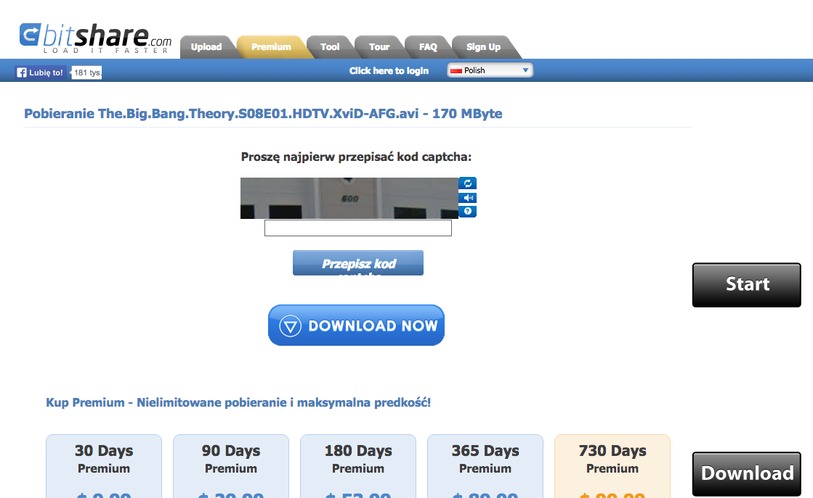
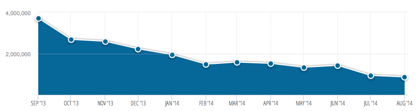
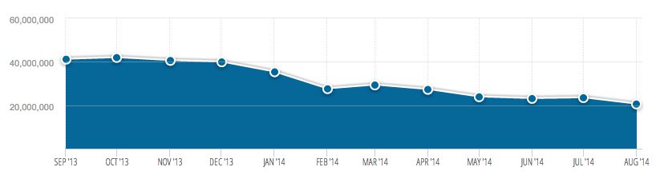

FilesTube
V2MOM Q3 2014
FT Team
A look to the past
Nasz V2MOM
-
Vision
- Serwis FilesTube jest prosty w użyciu i przyjazny dla użytkownika
Bitshare
FileFactory
-
But How?
-
Values
- Prezentujemy lepszej jakości wyniki
- Zachęcamy ludzi do dzielenia się informacją o multimediach
- Zachęcamy nowych użytkoników do korzystania z FT
- Skracamy ścieżkę dla użytkownika do prawidłowego wyniku
- Geolokalizujemy wyniki wyszukiwania
- Prezentujemy mniej fake’ów
- Wprowadzamy tryb bezpiecznego wyszukiwania
- Grupujemy logicznie wyniki zmniejszając nadmiar niepotrzebnej informacji
- Zwiększamy ruch poprzez zakup linków do WL’i
- Reklamujemy się streamingami na forach
- Content marketing
Methods
Czy coś nam grozi?
- Nie umiemy wydzielić safe search (Jak wykrywac adult content?)
- Nie potrafimy grupować plików
-
Nie mamy wystarczającej ilości osób, które mogą promować FT i WL’e
(programiści marketingowcami?)
- Nie umiemy kupować linków (bo jak to robic?)
- Nie jesteśmy margekingowcami (przynajmniej nikt z zespołu się do tego nie przyznał)
Measures
- Gotowa funkcjonalność grupowania wyników
- Na 30 searchy osiągamy max 20% duplikatów
- Posiadamy “safe search”
- 500k UU dziennie
- Postujemy na bieżąco na 10 forach najbardziej popularne wyniki streamingowe
- Min. 120 linków kupionych na WL’e (10/tydzień)
- Dodanie FT do 100 rankingów stron na temat najlepszych stron streamingowych/z multimediami
Jak nam poszło?
- Gotowa funkcjonalność grupowania wyników
- Na 30 searchy osiągamy max 20% duplikatów
- Posiadamy “safe search” +bonus - zakładka dla "dorosłych"
-
500k UU dziennie
Y U NO USE FT!?

-
Postujemy na bieżąco na 10 forach najbardziej popularne wyniki streamingowe
Fora nie przepadają za naszymi linkami
- Min. 120 linków kupionych na WL’e (10/tydzień)
- Dodanie FT do 100 rankingów stron na temat najlepszych stron streamingowych/z multimediami
Dlaczego tak mało?
- Brak chętnych do współpracy z FT
- Nie pracujemy wydajnie jako marketingowcy
- Inne zadania o których później
Czemu nie udało się nam osiągnąc celu?
- Nasz marketing kuleje
- Blokowanie FilesTube przez ISP
- Dużo śmieci (xxx wszędzie)
- Rynek mocno się zmienił
Jak radzi sobie konkurencja?
FileTram  Depositfiles 
Co zmieniliśmy od ostatniego V2MOM
Przede wszystkim V2MOM był tworzony przez cały zespół
- Każdy wierzy w sensowność dokumentu
- Prace pokrywają się z wyznaczonym celem
- Każdy stara się osiągnąć cel
Wracaliśmy do dokumentu co 2 tygodnie
- Pamiętaliśmy o swoich celach
- Mieliśmy możliwość korygowania dokumentu
-
Dokument nie był martwy
Co dalej z FT?
Zajęliśmy się "innymi zadaniami"
Wyzwanie
- skończyć w 1,5 tygodnia

Powrót do korzeni RS
Zarzuciliśmy V2MOM - brak czasu oraz długofalowej wizji, która dopiero powstaje
Wizja ewoluuje z tygodnia na tydzień, praca organizowana jest w krótkich okresach.
Co dalej z V2MOM w projekcie?
Trudno powiedzieć:
- Nakierunkowanie na cel
- Ale brak wiary w sens jego tworzenia